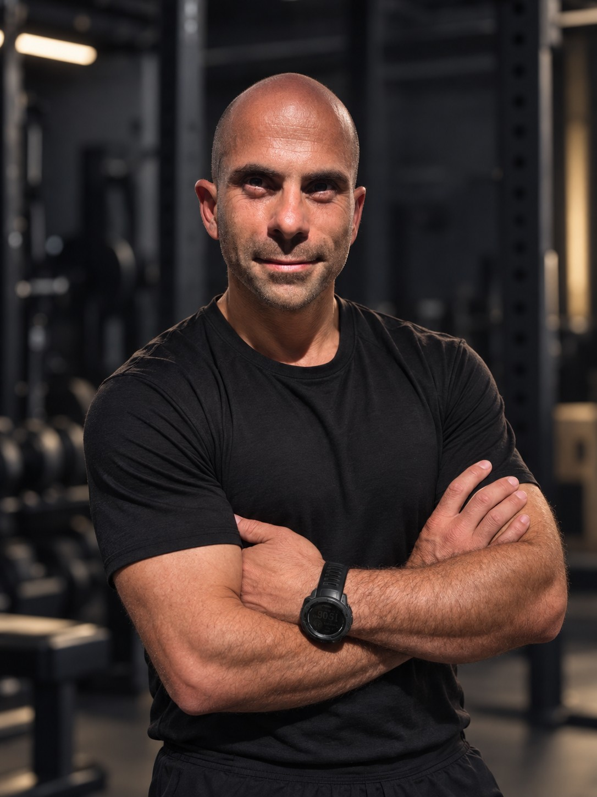

Mais de 15 anos a trabalhar com atletas de alta competição — três ciclos Olímpicos na Vela (Rio 2016, Tóquio 2020, Paris 2024) e percursos de referência no Surf, Ténis, Padel e Freediving.

Fisiologista do exercício e preparador físico há mais de 15 anos, especializado em preparação física e fisiológica aplicada à Vela Olímpica desde 2015 — com percursos paralelos no Surf, Ténis, Padel e Freediving.
Estruturas de época completas para atletas e federações — da avaliação inicial ao pico competitivo, com periodização à medida do calendário desportivo.
Acompanhamento individual, reabilitação e treino 1x1 — planos claros e objetivos, adaptados ao calendário competitivo de cada atleta.
Três ciclos Olímpicos na Vela e um percurso de referência no Surf nacional e internacional — campeões nacionais, europeus e mundiais de júnior.
Espaço reservado para testemunho real — a substituir por citação autorizada do atleta ou federação.
Espaço reservado para testemunho real — a substituir por citação autorizada do atleta ou federação.
Espaço reservado para testemunho real — a substituir por citação autorizada do atleta ou federação.
Disponível para acompanhamento de atletas, federações e estruturas técnicas — em Portugal e internacionalmente.